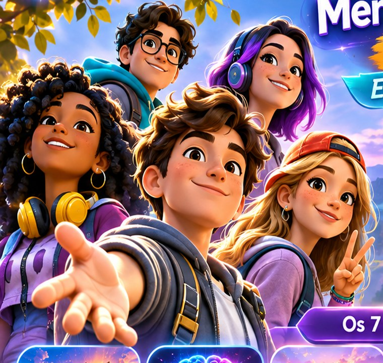

NOVOS DESAFIOS INTERATIVOS
Explore. Descubra. Transforme.
Sete mundos • três mecânicas diferentes por mundo • jogue com ou sem áudio
Escolha seu mundo
Em cada mundo, investigue a cena, relacione elementos e organize uma estratégia. As pistas mudam conforme o tema.
As atividades são educativas e apresentam possibilidades de reflexão, não diagnósticos nem avaliações da pessoa. O progresso fica apenas neste navegador.